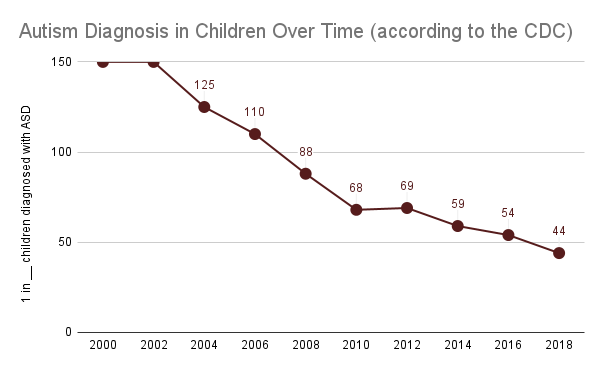
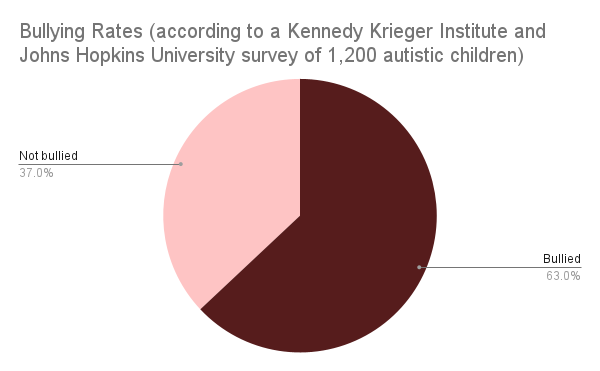
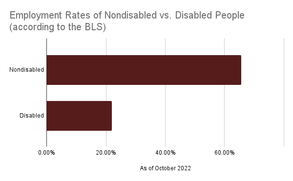

What is Autism?
Autism Spectrum Disorder (also called ASD or simply autism) is a neurological disability that affects the way we think.
Due to how autistic brains work, we process the world around us differently from typical individuals. We are prone to sensory overload, which can cause us to either shut down or melt down. Additionally, we often struggle to understand social cues.
Autism is genetic; you are either born with it or not. It is NOT caused by vaccines, "refrigerator mothers," or any other external circumstances.

More of us are getting diagnosed than ever. This does not mean more people are autistic. It means less of us will be labelled as "lazy" or "stupid," and we will be able to receive the support we need earlier.
Why is Identity-First Language Preferred?
The use of person-first language ("person with autism") suggests that autism can be separated from oneself, which casts autism as an undesirable trait and further stigmatizes it. Autism is a part of one's identity. An autistic brain will always be autistic.
Identity-first language ("autistic person") integrates autism as a part of oneself. It does not encapsulate one's whole identity, but is always there, similar to categories such as race and sexual orientation.
What Are Microaggressions?
Microaggressions are small yet hurtful comments directed at members of marginalized groups. Such comments may seem innocuous, but they reinforce a legacy of discrimination.
Common microaggressions include:
- "You don't look autistic."
- "We're all a little autistic!"
- "I'm sorry this happened to you."
- Using the r-slur
- Using euphemisms such as "special needs" or "differently abled"
What Discrimination Do Autistic Children Face?
In school, autistic children are disproportionately victims of bullying compared to typical children. All kids have a right to a safe learning environment, but this is not always a reality.

In addition to being bullied, autistic students are often mistreated by school staff. Faculty may use physical restraint, seclusion in a locked room, or painful aversives as a punishment. These techniques are not effective and can be traumatizing, if not lethal.
"Special education" programs are inadequate. They segregate autistic children from their peers, perpetuating the idea that disability should be hidden away. A byproduct of this is that these programs create lower expectations for autistic students. They are silently shuffled through the school system, rarely interacting with the wider community.
Once these students graduate from high school, they are often left with no additional support. Their future looks bleak.
What Discrimination Do Autistic Adults Face?
Autism is heavily associated with children. As a result, we are frequently subject to infantilization, the assumption that autistic (and all disabled) individuals are childlike. This frequently manifests in typical people speaking to us like a child or even excluding us from conversations. This practice steals our autonomy.
Nonverbal individuals in particular are assumed to be incapable of learning or communicating. All people can communicate; some may simply need additional tools to do so.
A glaring failure of our society is that the majority of autistic people are unemployed. Many are too disabled to work at all, while those with the capability struggle to find employment.

Autistic people are a valuable addition to the workplace, due to our divergent minds allowing us to think creatively and focus on a single task for a long time. However, we need accomodations that many employers are unwilling to provide.
How Can I Be An Ally?
- ALWAYS PRESUME COMPETENCE!! Assume autistic people are capable of learning and comprehension, even when there is no visible evidence. Nonverbal people can and do understand their environment; talking is not equivalent to thinking.
- Autistic people are constantly fighting for the right to self-advocacy. Support the cause. Go to the Autistic Self-Advocacy Network (ASAN) website for more information.
- Be patient with us. Allow us to decompress when we need to. Autistic people are prone to sensory overload, which can lead to meltdowns or shutdowns.
- Use language that is clear and free of hidden intent. Many of us grasp only literal meaning.
- Go Red Instead! "Light it Up Blue" was created by Autism Speaks, an organization hated within the autistic community.
Return to top